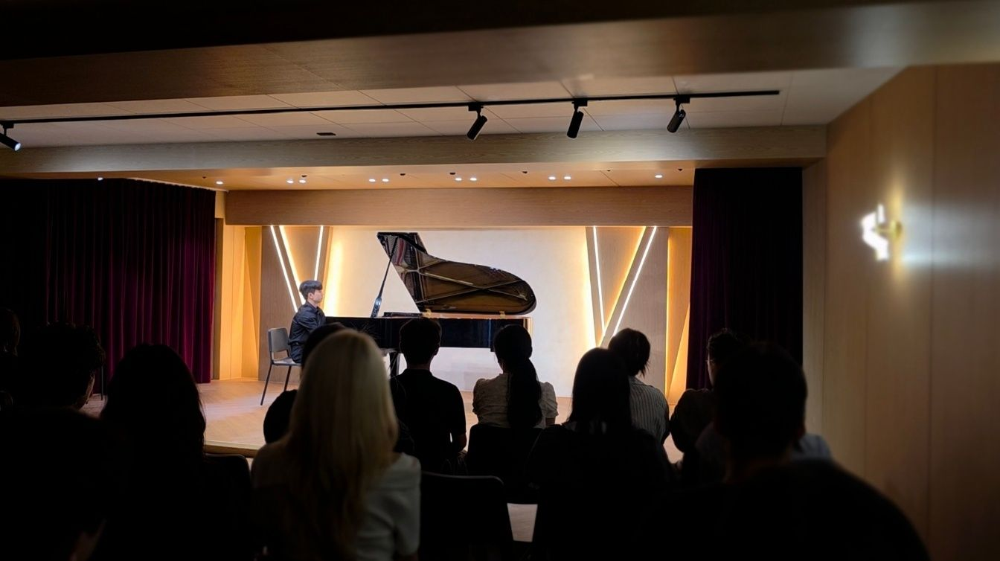
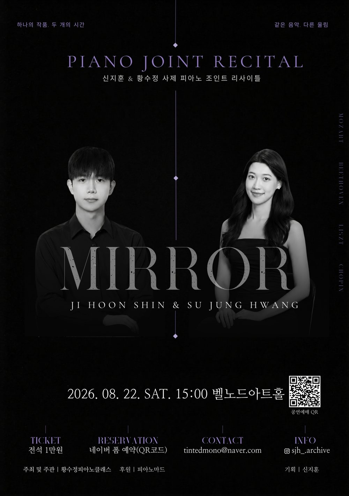
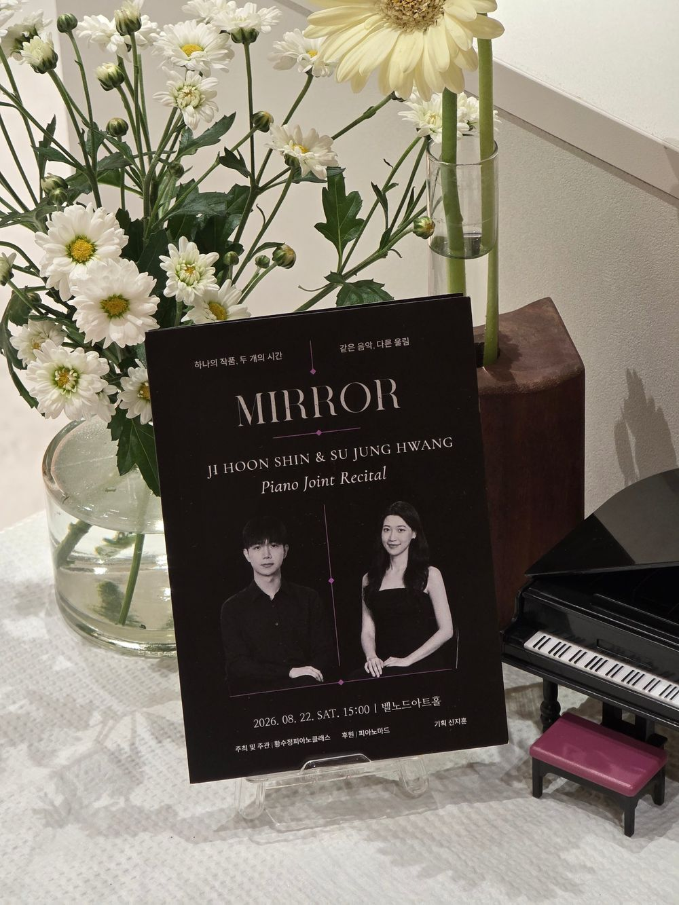
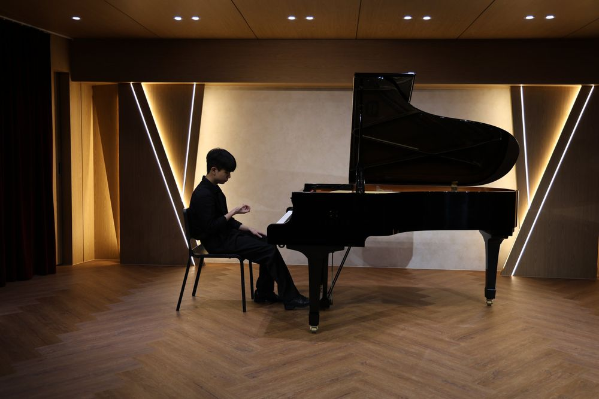
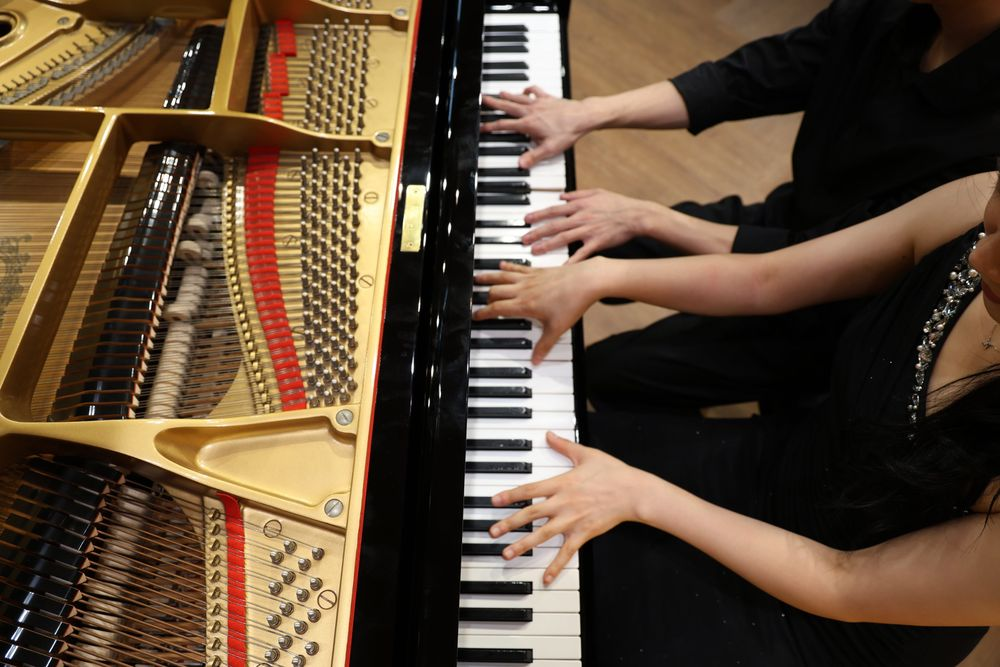
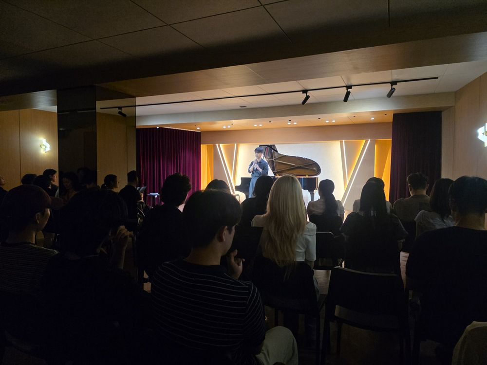

소개
거울은 피사체를 있는 그대로 맑게 비추어 내지만, 바라보는 각도에 따라 그 이면의 다채로운 풍경을 담아내기도 합니다. 사제(師弟)에게 음악은 이와 같은 커다란 거울입니다. 제자는 선생님의 깊은 발자취를 거울삼아 음악을 향한 진지한 태도를 배워왔고, 선생님은 제자의 열정을 가까이에서 지켜보며 그 성장을 함께 해왔습니다. 일방적인 가르침을 넘어, 피아노 앞에서 두 사람은 서로의 거울이 되어 교감해 왔습니다.
선생님은 제자에게 음악을 ‘무채색의 악보 위에 각자의 색을 입혀가는 과정’이라고 전해왔습니다. 같은 흑백의 건반 위에서 시작하지만, 두 사람이 만들어내는 소리의 결은 각기 다른 빛을 띱니다. 선생님의 깊고 원숙한 색채 곁에서, 제자는 자신만의 색을 차분히 칠해 나갑니다.
특히 이번 무대에서 함께 나누는 쇼팽 소나타 2번 1악장은, 하나의 음악을 공유하면서도 서로 다른 채도와 명도로 곡을 완성해 나가는 뜻깊은 여정이 될 것입니다. 서로를 비추며 닮아가면서도, 각자의 온도로 색을 입혀낸 두 피아노의 울림이 관객 여러분의 마음속 무채색의 공간에도 따뜻하고 아름다운 색을 채워주는 시간이 되기를 소망합니다.
프로그램
1부
- L. V. Beethoven32 Variations in c minor, WoO 80
- F. LisztRhapsodie espagnole, S. 254
- F. ChopinPiano Sonata No. 2 in b-flat minor, Op. 35
I. Grave – Doppio movimento
2부
- W. A. MozartPiano Sonata No. 14 in c minor, K. 457
I. Molto allegro - F. ChopinWaltz in A-flat Major, Op. 34 No. 1
Waltz in D-flat Major, Op. 64 No. 1
Waltz in b minor, Op. 69 No. 2 - F. ChopinPiano Sonata No. 2 in b-flat minor, Op. 35
I. Grave – Doppio movimento
기획 노트
이름과 콘셉트
스승과 제자가 서로를 비추는 관계를 ‘거울’에 담았습니다. 두 사람이 같은 곡, 쇼팽 소나타 2번 1악장을 각자 연주해 같은 음악이 다르게 울리는 순간을 무대의 중심에 두었습니다.
디자인
흑백 건반에 각자의 색을 입힌다는 소개 글처럼, 포스터와 팸플릿은 검정 바탕 위에 한 가지 색만 더했습니다.
홍보
공연 전 14주 동안 SNS에서 공연의 이야기와 준비 과정을 단계별로 나누어 알렸고, 예매는 신청서로 받았습니다.
당일 진행
기획자가 직접 사회를 맡아 곡과 무대 사이를 이었습니다.
사진
그날의 장면






영상
공연 영상은 유튜브 채널에 공개할 예정입니다.
YouTube 채널 ↗공연 정보
- 일시
- 2026년 8월 22일 토요일 오후 3시
- 장소
- 벨노드아트홀
- 연주
- 신지훈, 황수정
- 티켓
- 전석 1만 원
- 주최 및 주관
- 황수정피아노클래스
- 후원
- 피아노마드
- 기획
- 신지훈